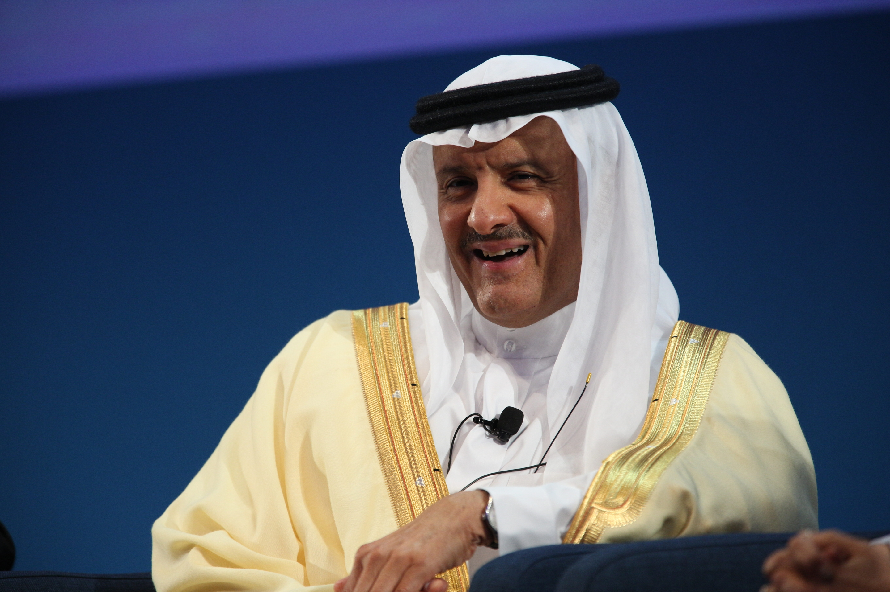
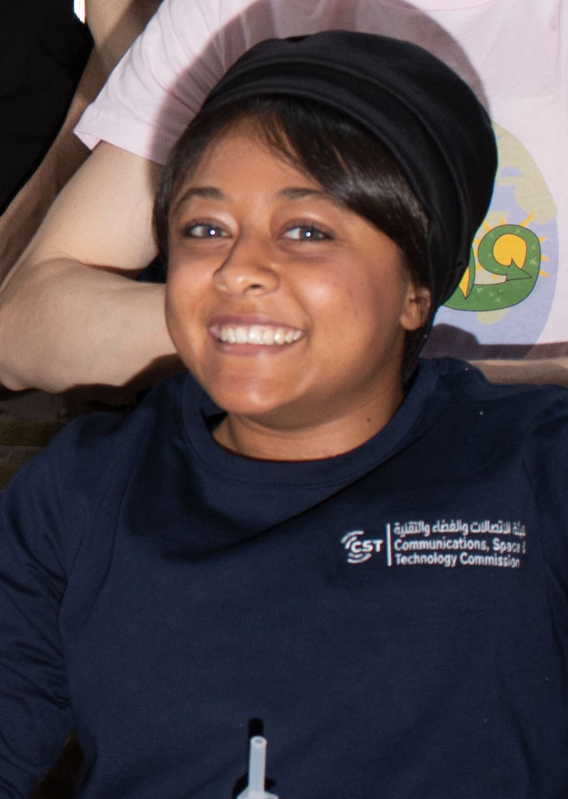
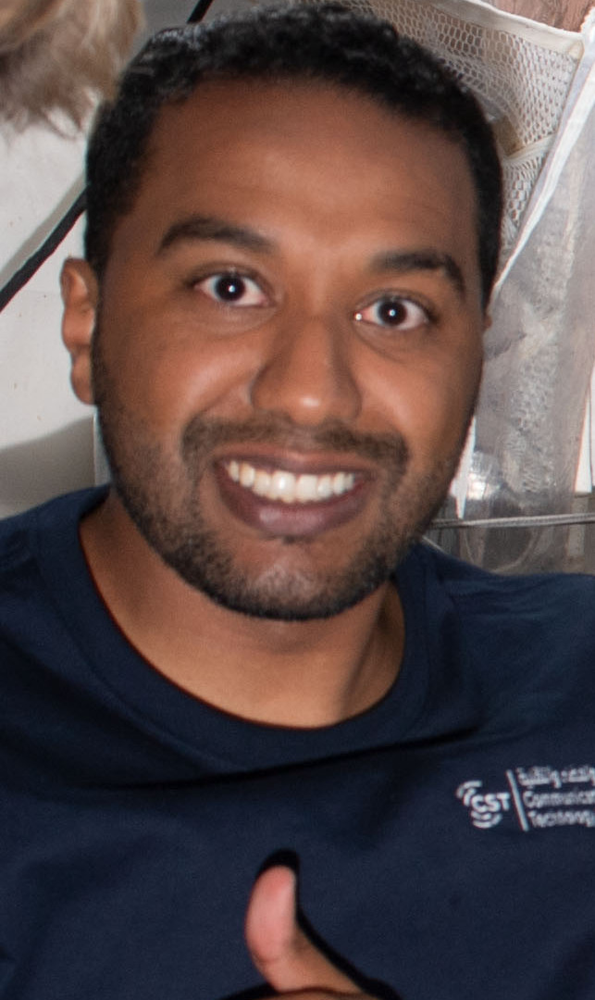
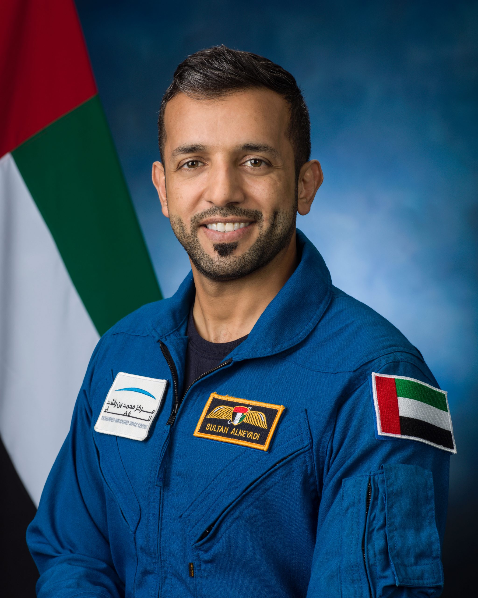
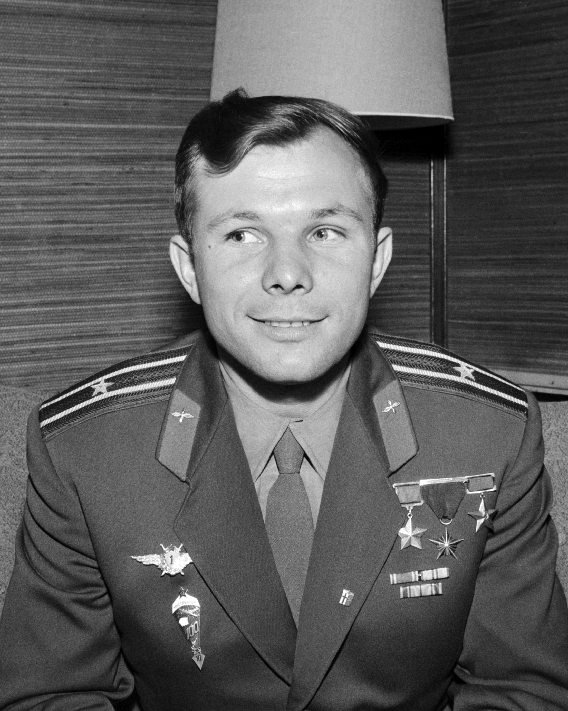
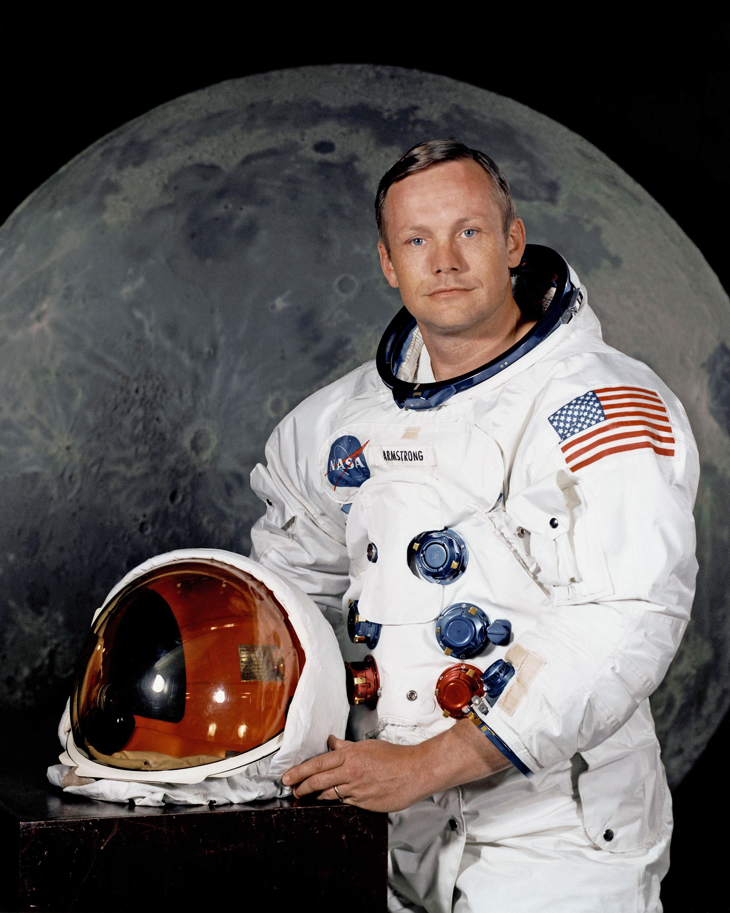

المملكة العربية السعودية
وزارة التعليم
الإدارة العامة للتعليم بمنطقة مكة المكرمة مدارس الفرسان الأهلية بمكة المكرمةKINGDOM OF SAUDI ARABIA
MINISTRY OF EDUCATION
General Department of Education - Makkah Al-Forsan Private Schools Makkahالتقرير الختامي الموثق لفعاليات أسبوع الفضاء العالمي
بوابة الفضاء التفاعلية الحديثة (Interactive Space Portal)
🎯 الهدف العام ورؤية المبادرة التعليمية
انطلاقاً من مستهدفات رؤية المملكة 2030 في ترسيخ المعرفة الفضائية والعلوم والتقنية والهندسة والرياضيات (STEM)، وبتوجيه وإشراف الإدارة المدرسية المتمثلة في مدير المدرسة أ. محسن ردة الله الصاعدي ورائد النشاط أ. أيمن البنا، تم تصميم وبرمجة هذه المنصة الفضائية الشاملة بواسطة الطالبين محمد الحازمي وأحمد بيت المال، لتكون مركزاً تعليمياً وتفاعلياً رائداً يربط الطلاب بآفاق الفضاء وعجائب الكون.
📊 المحاور العلمية والتقنية المنجزة بالمنصة
| # | المحور العلمي | التقنية والأداة المستخدمة | الأثر والمخرجات التعليمية |
|---|---|---|---|
| 1 | رادار الطقس الفضائي الحي | Canvas تفاعلي ورصد مستويات G/S/R | فهم الرياح الشمسية والعواصف المغناطيسية وتأثيرها على الأقمار والاتصالات. |
| 2 | موسوعة النظام الشمسي | بطاقات ثلاثية الأبعاد + صور علمية | استكشاف الكواكب الثمانية، حساب الكتل والجاذبية وأقطار الأجرام. |
| 3 | تجارب PhET الفيزيائية | محاكاة HTML5 من جامعة كولورادو | تطبيق قوانين الجاذبية لنيوتن، المدارات، إطلاق المقذوفات، والمقلاع الجاذبي. |
| 4 | قطاع الفضاء والاتصالات السعودي | توثيق CST و SSA + صور طاقم Ax-2 وشعارات رسمية | إبراز ريادة المملكة، مبادرة Space SandBox التنظيمية، وتجارب الرواد السعوديين الـ 14 بمحطة ISS. |
| 5 | سجل رواد الفضاء العرب والعالميين | معرض رقمي وصور رسمية موثقة | التعريف بإنجازات المملكة والعالم وإلهام الأجيال بالقدوات الفضائية. |
| 6 | جناح وكالة ناسا الفضائية (NASA Hub) | محاكيات NASA Eyes 3D + صور JWST + طقس المريخ | معايشة حية لمسارات المركبات الفضائية، طقس فوهة جيزيرو، ورصد تلسكوب جيمس ويب للكون السحيق. |
| 7 | محطة الفضاء الدولية (ISS) | محاكي مداري بالزمن الحقيقي | تتبع مدار المحطة وسرعتها الفائقة (27,600 كم/س) وتجارب بيئة انعدام الوزن. |
| 7 | التحدي والشهادة الرقمية المعتمدة | اختبار معرفي + شهادة رقمية فورية معتمدة | قياس التحصيل العلمي وإصدار شهادة رائد فضاء فخرية لكافة الطلاب المجتازين. |
🇸🇦 توثيق قطاع الفضاء والاتصالات السعودي (CST & SSA)
أبرزت المنصة الدور الريادي للمملكة العربية السعودية وفق رؤية 2030 في قيادة قطاع الفضاء وتمكين الاتصالات المدارية عبر ركيزتين وطنيتين:
هيئة الاتصالات والفضاء والتقنية (CST)
الجهة التنظيمية لقطاع الفضاء الوطني؛ أطلقت أول بيئة تنظيمية تجريبية للفضاء (Space SandBox) بالمنطقة، وتنظيم الشبكات غير الأرضية (NTN) وإدارة الموارد الترددية والأقمار الصناعية.
وكالة الفضاء السعودية (SSA)
القيادة التنفيذية للاستراتيجية الوطنية للفضاء؛ قادت برنامج رواد الفضاء ومهمة Ax-2 بمحطة ISS، وتوقيع اتفاقيات أرتميس مع NASA، وإطلاق منظومة الأقمار الصناعية الوطنية (+17 قمراً).
👨🚀 توثيق رواد الفضاء العرب والعالميين المشمولين بالمنصة
تم استعراض السير التاريخية والعلمية لـ 6 من أبرز رواد الفضاء الذين غيروا تاريخ البشرية وصنعوا المجد الفضائي:

الأمير سلطان بن سلمان
أول رائد فضاء عربي ومسلم (1985)مكوك ديسكفري STS-51-G، إطلاق عرب سات-1B وتجارب طبية وضعت العرب على خارطة الفضاء.

ريانة برناوي
أول رائدة فضاء سعودية وعربية (2023)مهمة Ax-2 إلى محطة الفضاء الدولية، إنجاز أبحاث الخلايا الجذعية والاستمطار في الجاذبية الصغرى.

علي القرني
رائد فضاء سعودي وطيار مقاتل (2023)مهمة Ax-2، إجراء 14 تجربة بحثية واتصالات تفاعلية مباشرة مع الطلاب لإلهام جيل المستقبل.

د. سلطان النيادي
صاحب أطول مهمة فضائية عربية (2023)طاقم Crew-6 (186 يوماً)، أول عربي ينجز مهمة سير في الفضاء المفتوح (Spacewalk) لمدة 7 ساعات.

يوري جاجارين
أول إنسان يعبر إلى الفضاء (1961)مركبة فوستوك-1، دار دورة كاملة حول الأرض في 108 دقائق كاسراً الحاجز الكوكبي.

نيل أرمسترونج
أول إنسان يطأ سطح القمر (1969)رحلة أبولو 11، "وثبة عملاقة للبشرية"، مسجلاً أول أثر بشري تاريخي على سطح القمر.
🪐 توثيق جناح وكالة ناسا الفضائية ومهمات الفضاء السحيق
تم ربط المنصة بمصادر وبيانات وكالة الفضاء الأمريكية (NASA) لتزويد الطلاب بتجربة علمية حية تحاكي أحدث الاكتشافات الكونية:
محاكي NASA Eyes 3D الحي
إدماج نماذج محاكاة ثلاثية الأبعاد تفاعلية تغطي مسارات الكواكب الحقيقية، مناخ كوكب الأرض، ومسارات الكويكبات بالزمن الفعلي.
مرصدا جيمس ويب وهابل
مقارنة تقنية لاختراق الأشعة تحت الحمراء لسحب الغبار الكوني في سديم "أعمدة الخلق" وعرض حقل المجرات السحيق الأول SMACS 0723.
مهمة المريخ 2020 وبيرسيفيرانس
عرض طقس فوهة جيزيرو الحقيقي (درجات الحرارة، الضغط، الرياح)، وجهاز MOXIE لإنتاج الأكسجين، ورحلات المروحية Ingenuity.
برنامج أرتميس (Moon to Mars)
استعراض مسار كبسولة أوريون وصاروخ SLS، وخارطة طريق العودة البشرية المستدامة إلى القطب الجنوبي للقمر.
✨ أبرز النتائج والتوصيات
- حقق المشروع تفاعلاً طلابياً استثنائياً عبر دمج الفيزياء النظرية بمحاكيات PhET التفاعلية.
- تعزيز روح الفخر الوطني بالرحلات والمهمات العلمية الفضائية للمملكة العربية السعودية.
- التوصية باعتماد المنصة كمرجع دائم للأنشطة العلمية ومجال الفلك والفيزياء في المدرسة.